AdaBoost
Can many weak decision trees, each fixing the last one's mistakes, beat a single tree?
This tab applies AdaBoost to the same labeled city-days, the same AQI groups (Good, Moderate, Unhealthy) and the same training and testing split as the Decision Trees tab of Part 3, and compares it with the decision tree. It is organized into Overview, Data Prep, Code, Results and Conclusions.
Overview
Bagging and boosting
One decision tree is easy to read but unstable: a small change in the data can change the tree a lot. Ensemble methods combine many trees to get a steadier answer, and the two main strategies differ in how the trees are built. In bagging, many trees are grown independently, each on a random resample of the training days, and they vote with equal weight, which mainly reduces the instability. In boosting, the trees are grown one after another, and every new tree concentrates on the days that the earlier trees got wrong. The final answer is a weighted vote, in which trees that earned more trust have a larger say. Boosting mainly reduces the systematic error of very simple trees.
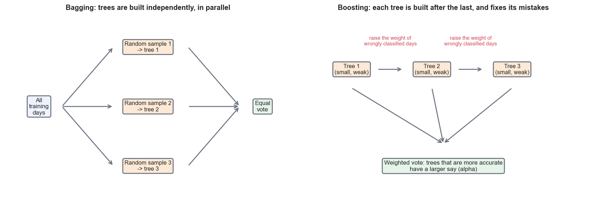
Decision stumps and the AdaBoost recipe
The classic building block of AdaBoost is the decision stump: a tree with a single question and two leaves, for example "is the solar radiation at most 23?". A stump is a weak learner, only a little better than guessing. AdaBoost (adaptive boosting) turns many weak learners into a strong one with the following steps, written for two classes:
- Start with equal weights. Each of the n training days gets the weight 1/n.
- Fit a stump that makes the smallest weighted error ε (the total weight of the days it classifies wrongly).
- Give the stump its weight alpha: alpha = ½ ln((1 - ε) / ε). A stump with a small error gets a large positive alpha, a stump that is as good as a coin flip (ε = 0.5) gets alpha = 0 and no say, and a stump worse than a coin flip gets a negative alpha. Alpha is therefore the trust given to that stump in the final vote.
- Reweight the days. The weight of every day that the stump got wrong is multiplied by ealpha (it becomes larger), the weight of every day it got right is multiplied by e-alpha (it becomes smaller), and all weights are rescaled to add up to 1. The next stump is therefore forced to concentrate on the hard days.
- Repeat for the chosen number of rounds.
- Take a weighted vote. Each stump votes +1 or -1 and is multiplied by its alpha. The class with the larger total vote wins.
With more than two classes, scikit-learn uses the SAMME version, in which alpha = ln((1 - ε) / ε) + ln(K - 1) for K classes, and the vote is taken over all classes. Two settings control the process: the number of rounds (n_estimators) and the learning rate, which shrinks every alpha, so that a small learning rate needs more rounds but learns more carefully.
A worked example with real days
The example below uses 70 real days (35 Good and 35 Unhealthy) described by two inputs, the solar radiation and the maximum temperature. In every round the weights of the days change, and the circled days are the ones that round's stump classified wrongly.
| Round | Stump (a single question) | Weighted error | Weight alpha | Weight of a wrong day | Weight of a right day |
|---|---|---|---|---|---|
| 1 | maximum temperature <= 27.4? If higher, Unhealthy; otherwise Good | 0.114 | 1.02 | × 2.78 | × 0.36 |
| 2 | solar radiation <= 22.3? If higher, Unhealthy; otherwise Good | 0.222 | 0.63 | × 1.87 | × 0.53 |
| 3 | maximum temperature <= 20.6? If higher, Unhealthy; otherwise Good | 0.298 | 0.43 | × 1.54 | × 0.65 |
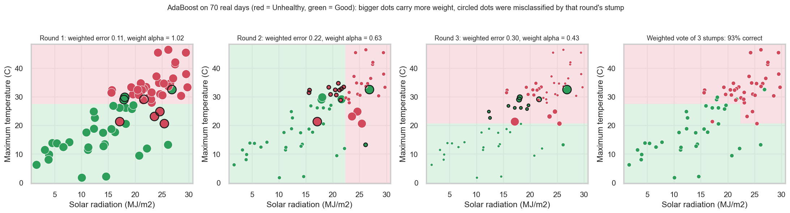
The first stump is the most accurate on the original weights, so it receives the largest alpha (1.02), and the stumps of the later rounds earn less trust because they work on the harder, reweighted days. Each stump alone is right on 89%, 80% and 84% of the 70 days, while their weighted vote is right on 93%. The figure below shows how the vote is computed for one day that is really Unhealthy: the stumps that vote for the right class carry a combined weight of 1.06, the stumps that vote for the wrong class carry 1.02, and the total vote of +0.03 gives the correct answer.
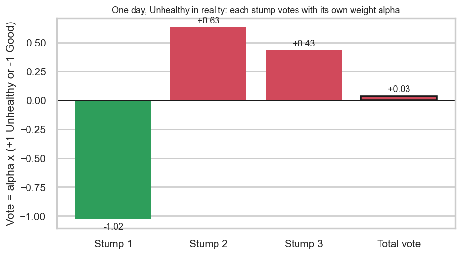
What is done with it here
AdaBoost is applied to the three-group AQI label, with small decision trees as the weak learners, and its number of rounds, its learning rate and the depth of its base trees are tuned by cross-validation. The result is compared with the single decision tree of Part 3 to see whether combining many weak trees gives a measurable gain.
Data Prep
AdaBoost is supervised, so every row needs a known label. The label is the AQI group of the day (Good, Moderate, or Unhealthy, meaning an AQI of 101 or more), as in Part 3, and all 20,075 city-days have one. The rows were split into a training set (16,060 rows) to fit the models and a testing set (4,015 rows) to grade them once, exactly as in Part 3. The two sets are disjoint, and the code confirmed that they share 0 rows; this matters because a model graded on days it has already seen would be graded on memory and would look better than it is. The split was stratified, so the label proportions are the same in both sets (30% Good, 61% Moderate and 9% Unhealthy).
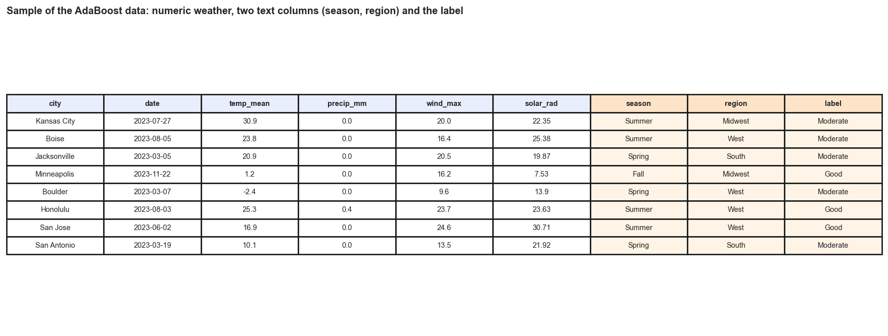
Turning text columns into numbers: one-hot encoding
The scikit-learn version of AdaBoost needs numeric inputs. Seven columns are already numbers (mean, maximum and minimum temperature, precipitation, maximum wind speed, solar radiation and the month), but season and region are text. Replacing the words by 1, 2, 3 and 4 would invent an order and distances that do not exist, so each category was turned into its own 0/1 column instead, a method called one-hot encoding: a winter day gets a 1 in season_Winter and 0 in the other three season columns, and a day in the West gets a 1 in region_West. Season has four values and region has four (the US Census regions), so the two text columns became eight number columns and the inputs total 15. Trees need no scaling, so the numeric columns were kept in their original units. The region adds a coarse idea of where the city is, which the weather alone does not give.
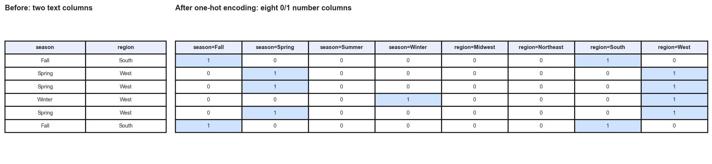

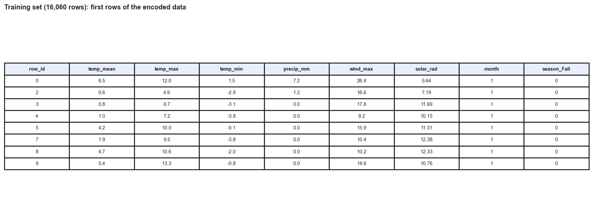

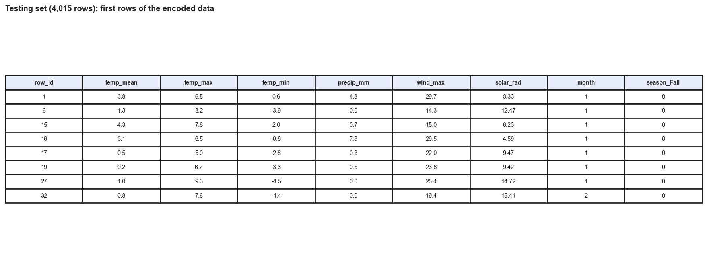
- ada_dataset.csv: the full labeled sample with the text columns (season, region) before encoding
- ada_train_onehot.csv and ada_test_onehot.csv: the encoded training and testing sets used by AdaBoost
- daily_city_air_weather_clean.csv: the cleaned daily table the sample comes from
- Raw data: daily weather, hourly air quality and city locations
Code
The analysis is written in Python with pandas, numpy, scikit-learn (AdaBoostClassifier with DecisionTreeClassifier as the weak learner, StratifiedKFold, staged_predict), joblib, scipy, matplotlib and seaborn. The worked example above was computed with a hand-written AdaBoost loop (in the same script) so that the weights and alphas could be shown.
07_regression_adaboost.pyon GitHub: encodes the data, tunes AdaBoost by cross-validation, fits the final models, compares them with the decision tree and draws every figure on this tab- reg_ada_results.json: every number quoted on this tab
Results
Tuning without touching the testing set
All settings were chosen with 5-fold cross-validation inside the training set: the training days were divided into five parts, each part took a turn as the validation set, and the validation accuracy was recorded after every boosting round. The testing set was not used for any choice. It was used once, for the final comparison. The search covered the depth of the base trees (1, 2 or 3), the learning rate (0.05, 0.1, 0.3 or 1.0) and up to 500 rounds.
| Base tree | Learning rate 0.05 | Learning rate 0.1 | Learning rate 0.3 | Learning rate 1.0 |
|---|---|---|---|---|
| depth 1 (stumps) | 63.2% at 269 rounds | 63.2% at 476 rounds | 64.2% at 318 rounds | 63.3% at 64 rounds |
| depth 2 | 64.7% at 500 rounds | 65.1% at 453 rounds | 65.0% at 418 rounds | 65.1% at 490 rounds |
| depth 3 | 66.1% at 470 rounds | 66.2% at 460 rounds | 66.4% at 263 rounds | 65.0% at 216 rounds |
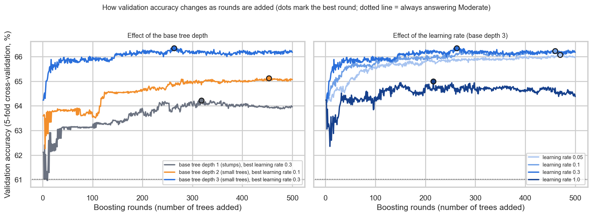
The best setting was base trees of depth 3, a learning rate of 0.3, and 263 rounds, with a cross-validated accuracy of 66.35% (the dotted line in the figure, 61.0%, is the accuracy of always answering Moderate). Plain stumps reach only 64.22% even with the best learning rate (0.3, 318 rounds), most likely because a single question cannot express a combination such as "hot and calm". Past about 150 rounds the curves are flat, so the extra rounds add almost nothing.
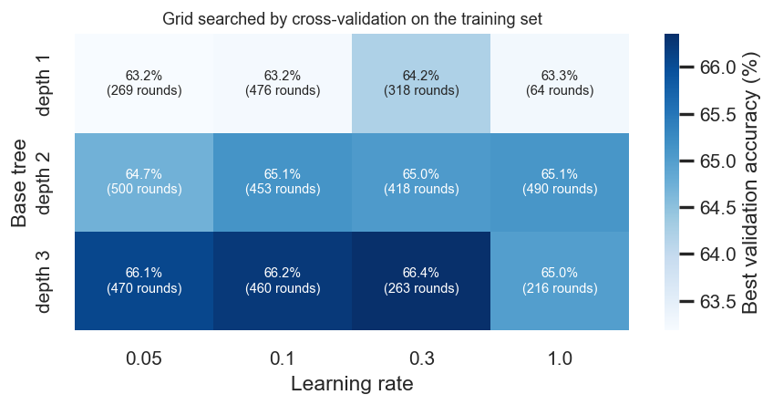
Final results on the testing set
The chosen model was fitted once on the whole training set and graded on the testing set: accuracy 65.5%, macro-F1 0.534, and it finds 30.9% of the Unhealthy days (115 of 372), with a precision of 54% when it predicts Unhealthy.
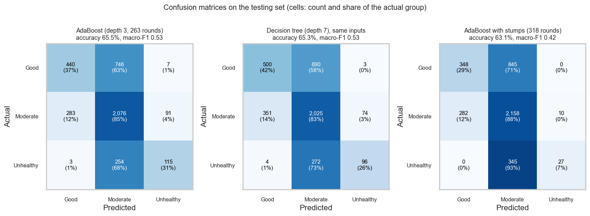
AdaBoost versus the decision tree from Part 3
| Method | Accuracy | Macro-F1 | Recall: Good | Recall: Moderate | Recall: Unhealthy | Precision: Unhealthy |
|---|---|---|---|---|---|---|
| Always answer Moderate (baseline) | 61.0% | 0.253 | 0% | 100% | 0% | - |
| Decision tree from Part 3 (weather inputs, depth 6) | 65.2% | 0.528 | - | - | 30% | - |
| Decision tree, same 15 inputs (depth 7) | 65.3% | 0.528 | 42% | 83% | 26% | 55% |
| AdaBoost with stumps (318 rounds) | 63.1% | 0.419 | 29% | 88% | 7% | 73% |
| AdaBoost, chosen by cross-validation (depth 3, 263 rounds) | 65.5% | 0.534 | 37% | 85% | 31% | 54% |
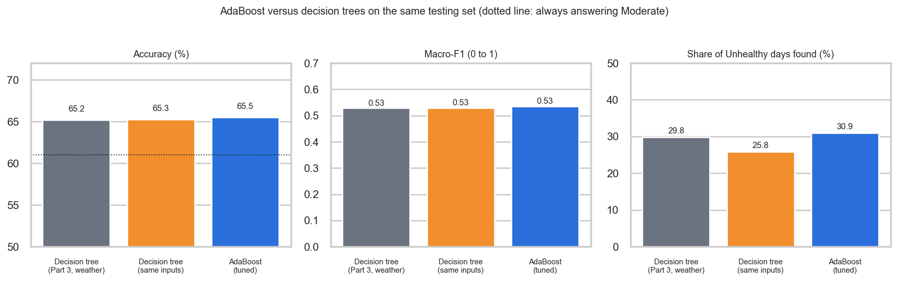
Which did best, and by how much? AdaBoost has the highest numbers, but by a margin that is too small to trust. Its accuracy of 65.53% is 0.25 percentage points above the decision tree on the same inputs (65.28%) and 0.35 points above the tuned tree of Part 3 (65.18%). On the testing set, AdaBoost was right where the tree was wrong on 318 days, and the tree was right where AdaBoost was wrong on 308 days, which is a difference of only 10 days out of 4,015. A paired significance test (McNemar's exact test) gives p = 0.72, and the 95% bootstrap interval of the difference runs from -1.0 to +1.5 points, so the two methods are statistically tied. The macro-F1 (0.534 against 0.528) and the share of Unhealthy days found (31% against 26%) tell the same story. Both are about 4.5 points above the 61.0% of always answering Moderate.
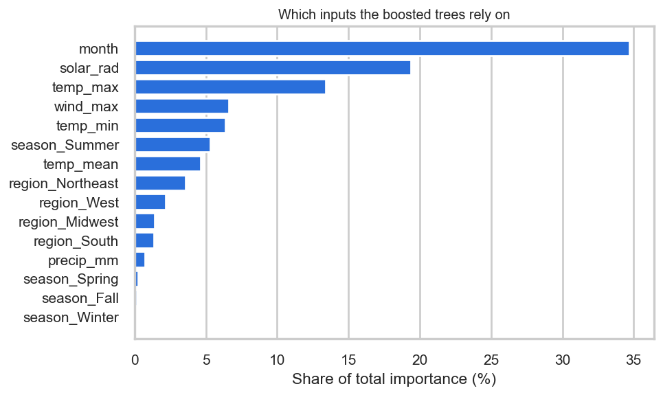
A harder test: learn on January to September, test on October to December
When the models were fitted on 15,015 days from January to September and graded on 5,060 days from October to December, always answering the training period's most common group was right on 47.8% of days. AdaBoost reached 54.3% (macro-F1 0.35) and the decision tree 50.8% (macro-F1 0.32). AdaBoost is again ahead, but it finds 0% of the few Unhealthy days of that period and the tree finds 0%, because few such days occur in autumn and the models learned mostly from the warm months. Forecasting into a new season remains much harder than the random split suggests.
Conclusions
Boosting helped only slightly. Combining 263 small trees raised accuracy to 65.5%, about 4.5 points above guessing the most common group, but a single well-tuned decision tree reaches nearly the same level (65.3%). Boosting reduces the errors that come from using very simple trees, yet it cannot create information that the inputs do not contain. The weather, the month and the region leave a large part of the variation in air quality unexplained, such as local traffic, industry and distant smoke.
Depth mattered more than the number of rounds. Plain stumps stayed at 64.2% in cross-validation, while trees of depth 3 reached 66.4%, and extra rounds beyond about 150 changed little. The combinations of conditions that signal unhealthy air, such as heat together with strong sunshine and calm winds, are probably better captured by trees that can ask a few questions in a row.
The practical choice is the simpler tree. Because AdaBoost and a decision tree are statistically tied, the tree is the better tool when the goal is to explain a warning to the public: it can be drawn and read, while a weighted vote of 263 trees cannot. AdaBoost is worth its extra complexity only if a small gain would matter.
Detection remains limited. AdaBoost finds about 31% of the Unhealthy days, and it is right about 54% of the time when it says a day will be unhealthy. As in the earlier parts, the days that matter most for health are the ones the weather alone predicts least well.